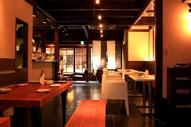

Phrases and Culture
Useful Phrases
Reference the Pronunciation page for a guide on saying words on the site
Sumimasen すみません will be your best friend in Japan. The usual translation is “excuse me” with a polite connotation. If you say sumimasen and point to something or even say a word that is usually enough and is even preferable to ask questions. For example, you need to find a restroom, “えっとすみません、トイレは？” “etto sumimasen, toire wa”? meaning “Um excuse me, the toilet/restroom is (where is implied here)”
Some helful words for places and directions:
- 駅 Eki - (train) station
- 建物 Tatemono - building
- それ・その Sore/Sono + are/ano - that (over there)
- 右・左 Migi Hidari - right left
- 隣 Tonari - next to (position)
When receiving a compliment it's common to be 'humble' and say thank you/you're too kind, いえいえ ieie - no no (you're too kind), ありがとうございます arigatou gozaimasu - thank you (formal),
Food Culture
- It is common to say itadakimasu いただきます, which basically means let’s eat, after everyone has gotten their food and before eating.
- It’s considered rude to make loud sounds in restaurants. Things like burping, slurping, and audible munching to name a few.
- If you’re American you’ll be relieved to hear that tipping in Japan is very rare. If you do tip, they will most likely turn it down out of humbleness which is big in Japanese culture.
- Don’t eat outside and expect trash cans to be few and far between outside. It’s an expectation to hold onto trash until you find a place to dispose of it.